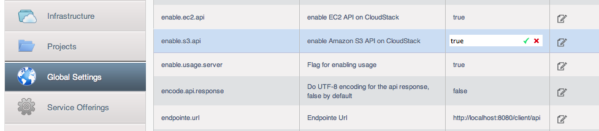
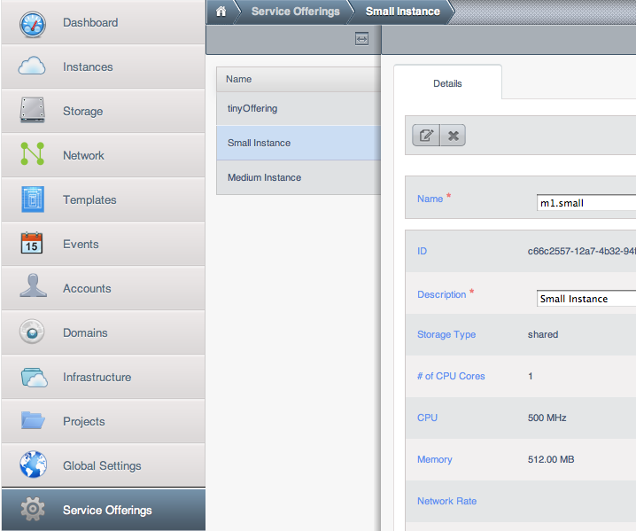

Additional 安装 Options¶
The next few sections describe CloudStack features above and beyond the basic deployment options.
Installing the Usage Server (Optional)¶
You can optionally install the Usage Server once the 管理服务 is configured properly. The Usage Server takes data from the events in the system and enables usage-based billing for accounts.
When multiple Management Servers are present, the Usage Server may be installed on any number of them. The Usage Servers will coordinate usage processing. A site that is concerned about availability should install Usage Servers on at least two Management Servers.
Requirements for Installing the Usage Server¶
- The 管理服务 must be running when the Usage Server is installed.
- The Usage Server must be installed on the same server as a Management Server.
Steps to Install the Usage Server¶
Package repository should already being configured. Refer to Configure Package Repository
Install package cloudstack-usage
On RHEL/CentOS systems, use:
# yum install cloudstack-usageOn Debian/Ubuntu systems, use:
# apt-get install cloudstack-usageOnce installed, start the Usage Server with the following command.
# service cloudstack-usage startEnable the service at boot
On RHEL/CentOS systems, use:
# chkconfig cloudstack-usage onOn Debian/Ubuntu systems, use:
# update-rc.d cloudstack-usage defaults
Working with Usage discusses further configuration of the Usage Server.
SSL (Optional)¶
CloudStack provides HTTP access in its default installation. There are a number of technologies and sites which choose to implement SSL/TLS. As a result, we have left CloudStack to expose HTTP under the assumption that a site will implement its typical practice.
CloudStack 4.9 and above uses embedded Jetty as its servlet container. For sites that would like CloudStack to terminate the SSL session, HTTPS can be enabled by configuring the https-related settings in CloudStack management server’s server.properties file at /etc/cloudstack/management/ location:
# For management server to pickup these configuration settings, the configured # keystore file should exists and be readable by the management server. https.enable=true https.port=8443 https.keystore=/etc/cloudstack/management/cloud.jks https.keystore.password=vmops.com
For storing certificates, admins can create and configure a java keystore file and configure the same in the server.properties file as illustrated above.
Database Replication (Optional)¶
CloudStack supports database replication from one MySQL node to another. This is achieved using standard MySQL replication. You may want to do this as insurance against MySQL server or storage loss. MySQL replication is implemented using a master/slave model. The master is the node that the Management Servers are configured to use. The slave is a standby node that receives all write operations from the master and applies them to a local, redundant copy of the database. The following steps are a guide to implementing MySQL replication.
Note
Creating a replica is not a backup solution. You should develop a backup procedure for the MySQL data that is distinct from replication.
Ensure that this is a fresh install with no data in the master.
Edit my.cnf on the master and add the following in the [mysqld] section below datadir.
log_bin=mysql-bin server_id=1
The server_id must be unique with respect to other servers. The recommended way to achieve this is to give the master an ID of 1 and each slave a sequential number greater than 1, so that the servers are numbered 1, 2, 3, etc.
Restart the MySQL service. On RHEL/CentOS systems, use:
# service mysqld restartOn Debian/Ubuntu systems, use:
# service mysql restartCreate a replication account on the master and give it privileges. We will use the “cloud-repl” user with the password “password”. This assumes that master and slave run on the 172.16.1.0/24 network.
# mysql -u root mysql> create user 'cloud-repl'@'172.16.1.%' identified by 'password'; mysql> grant replication slave on . TO 'cloud-repl'@'172.16.1.%'; mysql> flush privileges; mysql> flush tables with read lock;
Leave the current MySQL session running.
In a new shell start a second MySQL session.
Retrieve the current position of the database.
# mysql -u root mysql> show master status; +------------------+----------+--------------+------------------+ | File | Position | Binlog_Do_DB | Binlog_Ignore_DB | +------------------+----------+--------------+------------------+ | mysql-bin.000001 | 412 | | | +------------------+----------+--------------+------------------+
Note the file and the position that are returned by your instance.
Exit from this session.
Complete the master setup. Returning to your first session on the master, release the locks and exit MySQL.
mysql> unlock tables;
Install and configure the slave. On the slave server, run the following commands.
# yum install mysql-server # chkconfig mysqld on
Edit my.cnf and add the following lines in the [mysqld] section below datadir.
server_id=2 innodb_rollback_on_timeout=1 innodb_lock_wait_timeout=600
Restart MySQL. Use “mysqld” on RHEL/CentOS systems:
# service mysqld restartOn Ubuntu/Debian systems use “mysql.”
# service mysql restartInstruct the slave to connect to and replicate from the master. Replace the IP address, password, log file, and position with the values you have used in the previous steps.
mysql> change master to -> master_host='172.16.1.217', -> master_user='cloud-repl', -> master_password='password', -> master_log_file='mysql-bin.000001', -> master_log_pos=412;
Then start replication on the slave.
mysql> start slave;
Optionally, open port 3306 on the slave as was done on the master earlier.
This is not required for replication to work. But if you choose not to do this, you will need to do it when failover to the replica occurs.
Failover¶
This will provide for a replicated database that can be used to implement manual failover for the Management Servers. CloudStack failover from one MySQL instance to another is performed by the administrator. In the event of a database failure you should:
Stop the Management Servers (via service cloudstack-management stop).
Change the replica’s configuration to be a master and restart it.
Ensure that the replica’s port 3306 is open to the Management Servers.
Make a change so that the 管理服务 uses the new database. The simplest process here is to put the IP address of the new database server into each 管理服务’s /etc/cloudstack/management/db.properties.
Restart the Management Servers:
# service cloudstack-management start
Amazon Web Services Interface¶
Amazon Web Services Compatible Interface¶
CloudStack can translate Amazon Web Services (AWS) API calls to native CloudStack API calls so that users can continue using existing AWS-compatible tools. This translation service runs as a separate web application in the same tomcat server as the management server of CloudStack, listening on a different port. The Amazon Web Services (AWS) compatible interface provides the EC2 SOAP and Query APIs as well as the S3 REST API.
Note
This service was previously enabled by separate software called CloudBridge. It is now fully integrated with the CloudStack management server.
Warning
The compatible interface for the EC2 Query API and the S3 API are Work In Progress. The S3 compatible API offers a way to store data on the management server file system, it is not an implementation of the S3 backend.
Limitations
- Supported only in zones that use basic networking.
- Available in fresh installations of CloudStack. Not available through upgrade of previous versions.
- Features such as Elastic IP (EIP) and Elastic 负载均衡 (ELB) are only available in an infrastructure with a Citrix NetScaler device. Users accessing a Zone with a NetScaler device will need to use a NetScaler-enabled network offering (DefaultSharedNetscalerEIP and ELBNetworkOffering).
Supported API Version¶
- The EC2 interface complies with Amazon’s WDSL version dated November 15, 2010, available at http://ec2.amazonaws.com/doc/2010-11-15/.
- The interface is compatible with the EC2 command-line tools EC2 tools v. 1.3.6230, which can be downloaded at http://s3.amazonaws.com/ec2-downloads/ec2-api-tools-1.3-62308.zip.
Note
Work is underway to support a more recent version of the EC2 API
Enabling the EC2 and S3 Compatible Interface¶
The software that provides AWS API compatibility is installed along with CloudStack. You must enable the services and perform some setup steps prior to using it.
Set the global configuration parameters for each service to true. See *Setting Global Configuration Parameters*.
Create a set of CloudStack service offerings with names that match the Amazon service offerings. You can do this through the CloudStack UI as described in the 管理员手册.
Warning
Be sure you have included the Amazon default service offering, m1.small. As well as any EC2 instance types that you will use.
If you did not already do so when you set the configuration parameter in step 1, restart the 管理服务.
# service cloudstack-management restart
The following sections provides details to perform these steps
Enabling the Services¶
To enable the EC2 and S3 compatible services you need to set the configuration variables enable.ec2.api and enable.s3.api to true. You do not have to enable both at the same time. Enable the ones you need. This can be done via the CloudStack GUI by going in Global Settings or via the API.
The snapshot below shows you how to use the GUI to enable these services

Using the CloudStack API, the easiest is to use the so-called integration port on which you can make unauthenticated calls. In Global Settings set the port to 8096 and subsequently call the updateConfiguration method. The following urls shows you how:
http://localhost:8096/client/api?command=updateConfiguration&name=enable.ec2.api&value=true
http://localhost:8096/client/api?command=updateConfiguration&name=enable.ec2.api&value=true
Once you have enabled the services, restart the server.
Creating EC2 Compatible 计算方案¶
You will also need to define compute service offerings with names compatible with the Amazon EC2 instance types API names (e.g m1.small,m1.large). This can be done via the CloudStack GUI. Go under 计算方案 select Compute offering and either create a new compute offering or modify an existing one, ensuring that the name matches an EC2 instance type API name. The snapshot below shows you how:

Modifying the AWS API Port¶
Note
(Optional) The AWS API listens for requests on port 7080. If you prefer AWS API to listen on another port, you can change it as follows:
- Edit the files
/etc/cloudstack/management/server.xml,/etc/cloudstack/management/server-nonssl.xml, and/etc/cloudstack/management/server-ssl.xml. - In each file, find the tag <Service name=”Catalina7080”>. Under this tag, locate <Connector executor=”tomcatThreadPool-internal” port= ….<.
- Change the port to whatever port you want to use, then save the files.
- Restart the 管理服务.
If you re-install CloudStack, you will have to re-enable the services and if need be update the port.
AWS API User Setup¶
In general, users need not be aware that they are using a translation service provided by CloudStack. They only need to send AWS API calls to CloudStack’s endpoint, and it will translate the calls to the native CloudStack API. Users of the Amazon EC2 compatible interface will be able to keep their existing EC2 tools and scripts and use them with their CloudStack deployment, by specifying the endpoint of the management server and using the proper user credentials. In order to do this, each user must perform the following configuration steps:
- Generate user credentials.
- Register with the service.
- For convenience, set up environment variables for the EC2 SOAP command-line tools.
AWS API Command-Line Tools Setup¶
To use the EC2 command-line tools, the user must perform these steps:
- Be sure you have the right version of EC2 Tools. The supported version is available at http://s3.amazonaws.com/ec2-downloads/ec2-api-tools-1.3-62308.zip.
- Set up the EC2 environment variables. This can be done every time you use the service or you can set them up in the proper shell profile. Replace the endpoint (i.e EC2_URL) with the proper address of your CloudStack management server and port. In a bash shell do the following.
$ export EC2_CERT=/path/to/cert.pem
$ export EC2_PRIVATE_KEY=/path/to/private_key.pem
$ export EC2_URL=http://localhost:7080/awsapi
$ export EC2_HOME=/path/to/EC2_tools_directory
Using Timeouts to Ensure AWS API Command Completion¶
The Amazon EC2 command-line tools have a default connection timeout. When used with CloudStack, a longer timeout might be needed for some commands. If you find that commands are not completing due to timeouts, you can specify a custom timeouts. You can add the following optional command-line parameters to any CloudStack-supported EC2 command:
Specifies a connection timeout (in seconds)
--connection-timeout TIMEOUT
Specifies a request timeout (in seconds)
--request-timeout TIMEOUT
Example:
ec2-run-instances 2 –z us-test1 –n 1-3 --connection-timeout 120 --request-timeout 120
Note
The timeouts optional arguments are not specific to CloudStack.
Supported AWS API Calls¶
The following Amazon EC2 commands are supported by CloudStack when the AWS API compatible interface is enabled. For a few commands, there are differences between the CloudStack and Amazon EC2 versions, and these differences are noted. The underlying SOAP call for each command is also given, for those who have built tools using those calls.
Table 1. Elastic IP API mapping
| EC2 command | SOAP call | CloudStack API call |
|---|---|---|
| ec2-allocate-address | AllocateAddress | associateIpAddress |
| ec2-associate-address | AssociateAddress | enableStaticNat |
| ec2-describe-addresses | DescribeAddresses | listPublicIpAddresses |
| ec2-diassociate-address | DisassociateAddress | disableStaticNat |
| ec2-release-address | ReleaseAddress | disassociateIpAddress |
Table 2. Availability Zone API mapping
| EC2 command | SOAP call | CloudStack API call |
|---|---|---|
| ec2-describe-availability-zones | DescribeAvailabilityZones | listZones |
Table 3. Images API mapping
| EC2 command | SOAP call | CloudStack API call |
|---|---|---|
| ec2-create-image | CreateImage | createTemplate |
| ec2-deregister | DeregisterImage | DeleteTemplate |
| ec2-describe-images | DescribeImages | listTemplates |
| ec2-register | RegisterImage | registerTemplate |
Table 4. Image Attributes API mapping
| EC2 command | SOAP call | CloudStack API call |
|---|---|---|
| ec2-describe-image-attribute | DescribeImageAttribute | listTemplatePermissions |
| ec2-modify-image-attribute | ModifyImageAttribute | updateTemplatePermissions |
| ec2-reset-image-attribute | ResetImageAttribute | updateTemplatePermissions |
Table 5. Instances API mapping
| EC2 command | SOAP call | CloudStack API call |
|---|---|---|
| ec2-describe-instances | DescribeInstances | listVirtualMachines |
| ec2-run-instances | RunInstances | deployVirtualMachine |
| ec2-reboot-instances | RebootInstances | rebootVirtualMachine |
| ec2-start-instances | StartInstances | startVirtualMachine |
| ec2-stop-instances | StopInstances | stopVirtualMachine |
| ec2-terminate-instances | TerminateInstances | destroyVirtualMachine |
Table 6. Instance Attributes Mapping
| EC2 command | SOAP call | CloudStack API call |
|---|---|---|
| ec2-describe-instance-attribute | DescribeInstanceAttribute | listVirtualMachines |
Table 7. Keys Pairs Mapping
| EC2 command | SOAP call | CloudStack API call |
|---|---|---|
| ec2-add-keypair | CreateKeyPair | createSSHKeyPair |
| ec2-delete-keypair | DeleteKeyPair | deleteSSHKeyPair |
| ec2-describe-keypairs | DescribeKeyPairs | listSSHKeyPairs |
| ec2-import-keypair | ImportKeyPair | registerSSHKeyPair |
Table 8. Passwords API Mapping
| EC2 command | SOAP call | CloudStack API call |
|---|---|---|
| ec2-get-password | GetPasswordData | getVMPassword |
Table 9. 安全组 API Mapping
| EC2 command | SOAP call | CloudStack API call |
|---|---|---|
| ec2-authorize | Authorize安全GroupIngress | authorize安全GroupIngress |
| ec2-add-group | Create安全Group | create安全Group |
| ec2-delete-group | Delete安全Group | delete安全Group |
| ec2-describe-group | Describe安全Groups | list安全Groups |
| ec2-revoke | Revoke安全GroupIngress | revoke安全GroupIngress |
Table 10. Snapshots API Mapping
| EC2 command | SOAP call | CloudStack API call |
|---|---|---|
| ec2-create-snapshot | CreateSnapshot | createSnapshot |
| ec2-delete-snapshot | DeleteSnapshot | deleteSnapshot |
| ec2-describe-snapshots | DescribeSnapshots | listSnapshots |
Table 11. Volumes API Mapping
| EC2 command | SOAP call | CloudStack API call |
|---|---|---|
| ec2-attach-volume | AttachVolume | attachVolume |
| ec2-create-volume | CreateVolume | createVolume |
| ec2-delete-volume | DeleteVolume | deleteVolume |
| ec2-describe-volume | DescribeVolume | listVolumes |
| ec2-detach-volume | DetachVolume | detachVolume |
Examples¶
There are many tools available to interface with a AWS compatible API. In this section we provide a few examples that users of CloudStack can build upon.
Boto Examples¶
Boto is one of them. It is a Python package available at https://github.com/boto/boto. In this section we provide two examples of Python scripts that use Boto and have been tested with the CloudStack AWS API Interface.
First is an EC2 example. Replace the Access and Secret Keys with your own and update the endpoint.
Example 1. An EC2 Boto example
#!/usr/bin/env python
import sys
import os
import boto
import boto.ec2
region = boto.ec2.regioninfo.RegionInfo(name="ROOT",endpoint="localhost")
apikey='GwNnpUPrO6KgIdZu01z_ZhhZnKjtSdRwuYd4DvpzvFpyxGMvrzno2q05MB0ViBoFYtdqKd'
secretkey='t4eXLEYWw7chBhDlaKf38adCMSHx_wlds6JfSx3z9fSpSOm0AbP9Moj0oGIzy2LSC8iw'
def main():
'''Establish connection to EC2 cloud'''
conn = boto.connect_ec2(aws_access_key_id=apikey,
aws_secret_access_key=secretkey,
is_secure=False,
region=region,
port=7080,
path="/awsapi",
api_version="2010-11-15")
'''Get list of images that I own'''
images = conn.get_all_images()
print images
myimage = images[0]
'''Pick an instance type'''
vm_type='m1.small'
reservation = myimage.run(instance_type=vm_type,security_groups=['default'])
if __name__ == '__main__':
main()
Second is an S3 example. The S3 interface in CloudStack is obsolete. If you need an S3 interface you should look at systems like RiakCS, Ceph or GlusterFS. This example is here for completeness and can be adapted to other S3 endpoint.
Example 2. An S3 Boto Example
#!/usr/bin/env python
import sys
import os
from boto.s3.key import Key
from boto.s3.connection import S3Connection
from boto.s3.connection import OrdinaryCallingFormat
apikey='ChOw-pwdcCFy6fpeyv6kUaR0NnhzmG3tE7HLN2z3OB_s-ogF5HjZtN4rnzKnq2UjtnHeg_yLA5gOw'
secretkey='IMY8R7CJQiSGFk4cHwfXXN3DUFXz07cCiU80eM3MCmfLs7kusgyOfm0g9qzXRXhoAPCH-IRxXc3w'
cf=OrdinaryCallingFormat()
def main():
'''Establish connection to S3 service'''
conn = S3Connection(aws_access_key_id=apikey,aws_secret_access_key=secretkey, \
is_secure=False, \
host='localhost', \
port=7080, \
calling_format=cf, \
path="/awsapi/rest/AmazonS3")
try:
bucket=conn.create_bucket('cloudstack')
k = Key(bucket)
k.key = 'test'
try:
k.set_contents_from_filename('/Users/runseb/Desktop/s3cs.py')
except:
print 'could not write file'
pass
except:
bucket = conn.get_bucket('cloudstack')
k = Key(bucket)
k.key = 'test'
try:
k.get_contents_to_filename('/Users/runseb/Desktop/foobar')
except:
print 'Could not get file'
pass
try:
bucket1=conn.create_bucket('teststring')
k=Key(bucket1)
k.key('foobar')
k.set_contents_from_string('This is my silly test')
except:
bucket1=conn.get_bucket('teststring')
k = Key(bucket1)
k.key='foobar'
k.get_contents_as_string()
if __name__ == '__main__':
main()